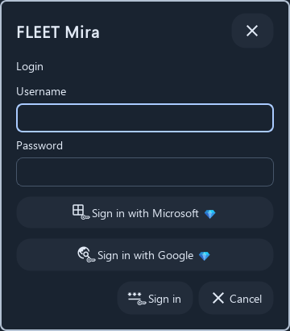
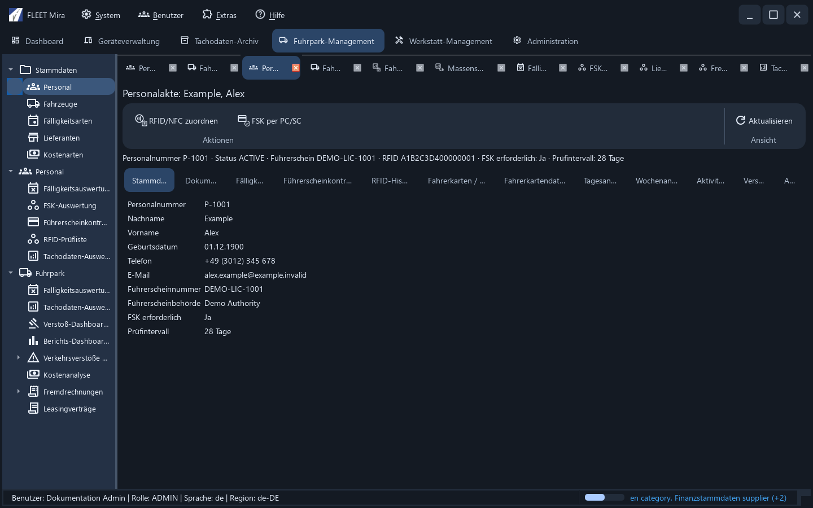
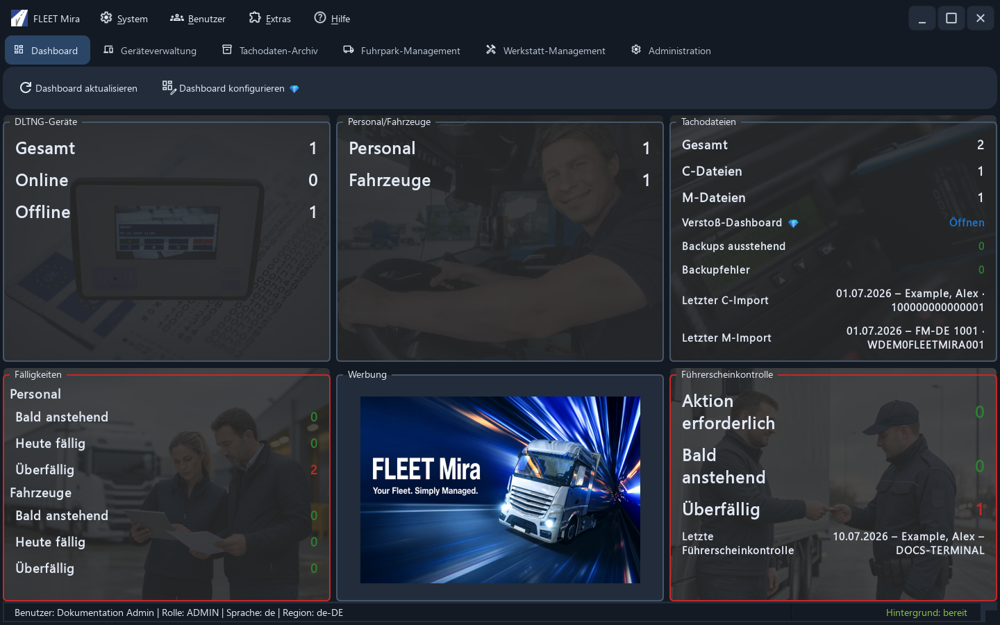
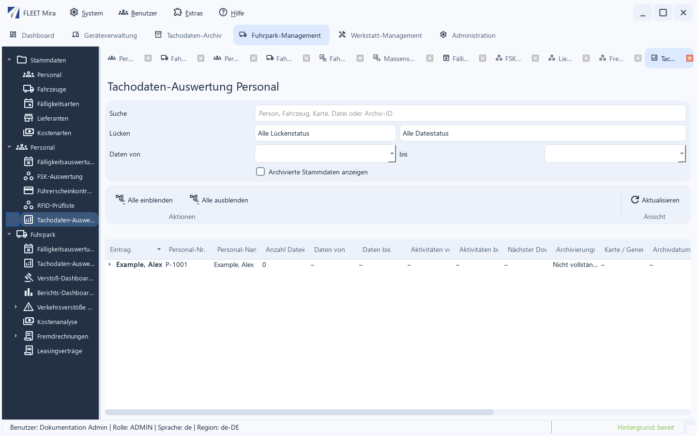
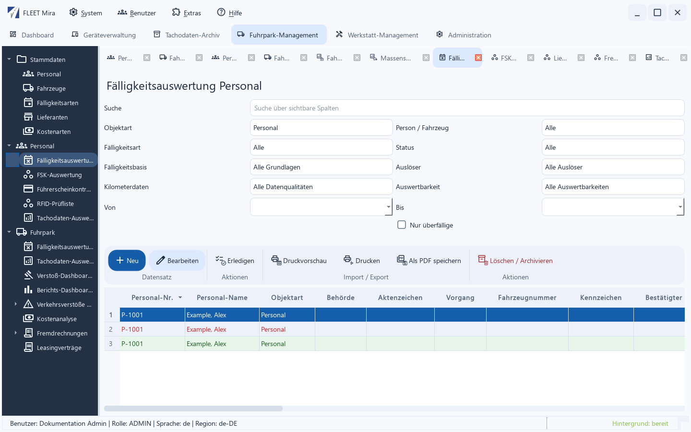
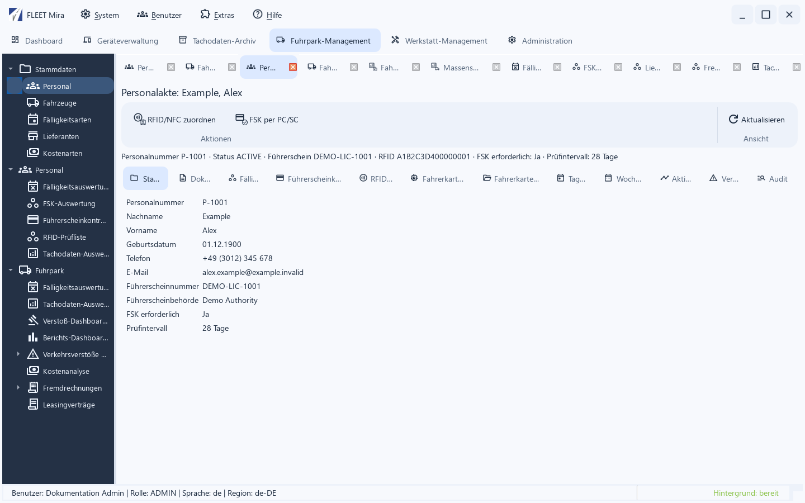
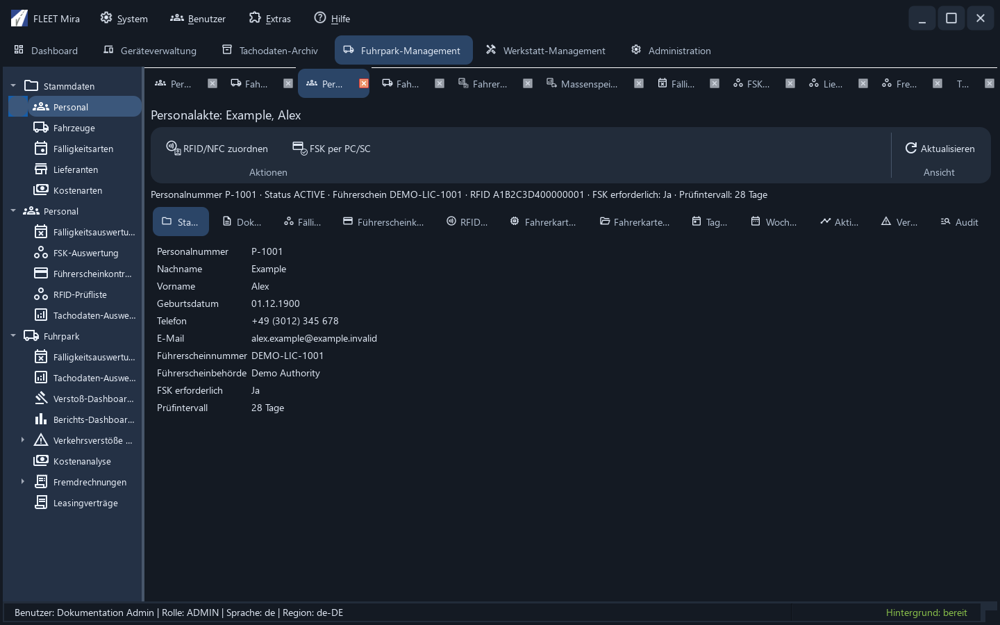
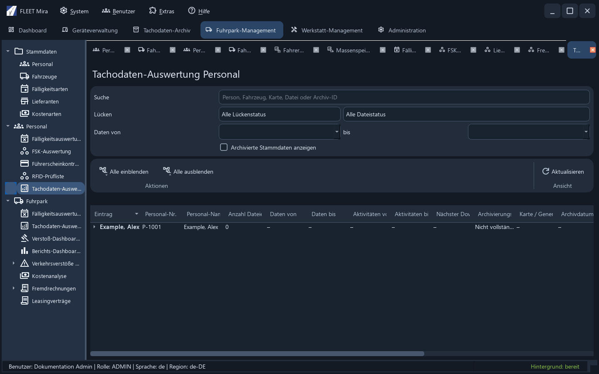
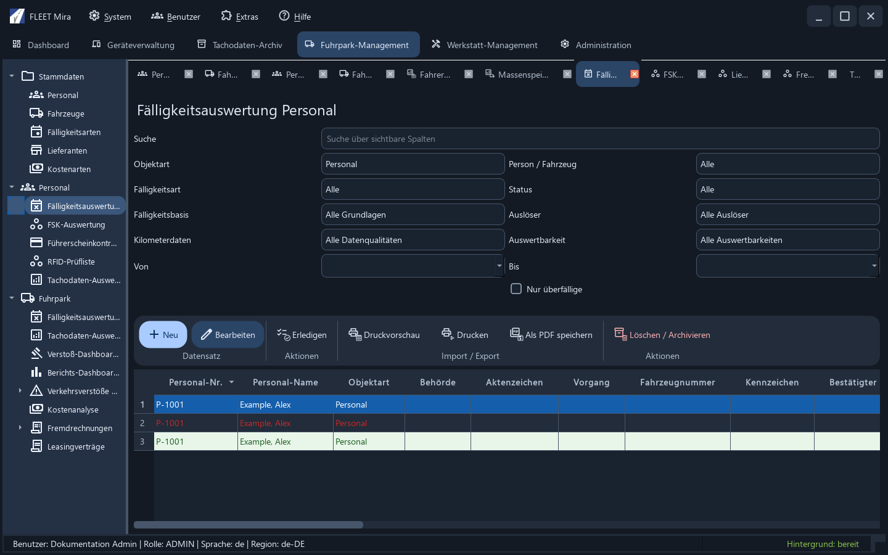

Material-3-Oberfläche des Clients¶
FleetMira verwendet in Basic, Pro und Enterprise dieselbe native Oberfläche mit blauen Akzenten, einer dunklen Navigation und gemeinsamen Material-Symbolen. Die Symbole werden mit der Anwendung ausgeliefert und benötigen keine Internetverbindung. Berechtigungen und Lizenzumfang bestimmen weiterhin, welche Funktionen verfügbar sind.
Kompakte Anmeldung¶
Das Anmeldefenster besitzt keine native Titelleiste. Über den Kopf mit dem Produktnamen lässt es sich verschieben; die Schließen-Schaltfläche, Abbrechen und Esc brechen die Anmeldung ab. Enter meldet mit den eingegebenen Daten an. Aktivierte SSO-Anbieter und die gegebenenfalls angebotene Wiederherstellung bleiben verfügbar. Fehlermeldungen erscheinen direkt im Fenster.

Enterprise-Mandanten¶
Enterprise meldet Benutzer zentral an und öffnet einen freigegebenen Kunden über die Mandantenauswahl. Kundenmandanten sind von Geräte-/Standortgruppen und Microsoft-Entra-Tenants zu unterscheiden. Mandanten einrichten und wechseln.
Gemeinsame Material-Fensterleisten¶
Client-eigene Hauptfenster und Dialoge verwenden eine Material-Fensterleiste anstelle der nativen Windows-Titelleiste. Ziehen Sie den Titelbereich zum Verschieben. Hauptfenster und dafür ausgelegte Dialoge bieten Minimieren, Maximieren bzw. Fenster wiederherstellen und Schließen. Kleine Dialoge und das Login zeigen nur die passenden Aktionen. Ein Doppelklick auf den Titelbereich maximiert ein dafür ausgelegtes Fenster. Alt+Leertaste oder ein Rechtsklick auf den Titel öffnet dessen Fenstermenü.
Schließen verwendet die vorhandenen Prüfungen für ungespeicherte Änderungen, Abbruch oder verpflichtende Eingaben. Eingebettete Arbeits-Tabs erhalten keine zusätzliche Fensterleiste. Dateiauswahlfenster verwenden die Qt-Darstellung; externe Browser und Fenster des Identitätsanbieters bleiben separat.

Helle und dunkle Darstellung¶
Öffnen Sie Benutzer → Mein Profil und wählen Sie unter Erscheinungsbild zwischen Hell und Dunkel. Speichern übernimmt die Darstellung sofort für alle geöffneten Ansichten und speichert sie für Ihr Benutzerkonto. Abbrechen verwirft die Auswahl. Vor der Anmeldung und nach dem Abmelden wird die dunkle Darstellung verwendet. Auch ohne gespeicherte Einstellung gilt Dunkel. Eine ausdrücklich gespeicherte Auswahl von Hell bleibt erhalten. Die Auswahl eines anderen Benutzers beeinflusst Ihre Einstellung nicht. Sprache und Region werden unabhängig davon verwaltet.
Navigation und Arbeitsbereiche¶
Das Dashboard füllt als direkte Hauptseite die gesamte Inhaltsfläche, ohne linke Navigation oder zusätzlichen Arbeits-Tab. Dies ist die ausdrücklich gewünschte Ausnahme vom Navigationsmuster der übrigen Bereiche.
Die übrigen Hauptbereiche enthalten links die gruppierte Navigation und rechts die Arbeits-Tabs. Bei einer neuen Anmeldung sind die Arbeits-Tabs leer. Wählen Sie einen Navigationseintrag, um dessen Übersicht zu öffnen. Ein bereits geöffneter Arbeitsbereich wird aktiviert. Tabs lassen sich verschieben und schließen; geschlossene Übersichten stehen über die Navigation erneut zur Verfügung.
Menüs, Untermenüs, Kontextmenüs und wichtige Aktionen zeigen neben ihrem Text ein Symbol. Der Text bleibt die maßgebliche Bezeichnung. Nicht erlaubte Navigationseinträge sind deaktiviert; lizenzbedingt ausgeblendete Einträge bleiben verborgen. Weitere Aktionen stehen bei schmalem Fenster im Überlaufmenü.
In der Geräteverwaltung öffnet Öffnen oder ein Doppelklick auf die normale Gerätezeile die Geräteakte in einem eigenen Arbeits-Tab. Mehrfaches Öffnen aktiviert dieselbe Akte. Einzelaktionen für URL, Systeminformationen und Dateien bleiben an ihren jeweiligen Bedienelementen verfügbar.
Einzelne Tachodatei auswerten¶
Einzelne Datei auswerten öffnet für M- und C-Dateien einen neuen Arbeits-Tab im Bereich Tachodaten-Archiv, kein separates Auswertungsfenster. Die Tabs tragen den Dateinamen mit dem technischen Präfix M: bzw. C:. Mehrfaches Öffnen derselben Datei aktiviert ihren vorhandenen Tab und erhält die gewählte Unteransicht. Die Tabs lassen sich verschieben und schließen; erneutes Öffnen nach dem Schließen lädt die Datei erneut. Die Archivübersicht bleibt verfügbar.
Aus dem Fuhrpark gestartete Einzeldatei-Auswertungen verwenden weiterhin dessen Arbeits-Tabs. Die Berechtigung archive.read bleibt erforderlich. Bei Abmeldung oder Entzug des Archivzugriffs werden die Archiv-Auswertungs-Tabs geschlossen.
Beispiele¶
Das Dashboard nutzt die volle Inhaltsbreite ohne linke Navigation:

Die folgenden nativen Ansichten enthalten ausschließlich synthetische Beispieldaten. Sie zeigen das Erscheinungsbild, keine Installation oder Produktivverbindung.
Tachodaten-Auswertung¶
Suche und Filter sind vom Aktionsbereich getrennt. Die aufklappbare Struktur für Fahrzeuge, Archivdateien und Archivierungslücken bleibt erhalten.

Fälligkeitsauswertung¶
Filter, Datensatzaktionen und Tabelle folgen einem gemeinsamen Aufbau. Eine ausgewählte Zeile bleibt auch bei Statusfarben blau mit weißer Schrift.

Personalakte und Tagesansicht¶
Die Personalakte verbindet datensatzbezogene Aktionen mit den zugehörigen Unteransichten. Tagesverlauf und Aktivitätentabelle behalten ihre fachlichen Farben; auf kleinen Fenstern stehen Scrollleisten und Tab-Navigation bereit.


Weitere dunkle Ansichten¶
Vor der Anmeldung verwendet die Oberfläche Englisch. Nach der Anmeldung gelten Sprache und Region des Benutzerprofils; die folgenden Arbeitsbereiche zeigen die dunkle Darstellung.

